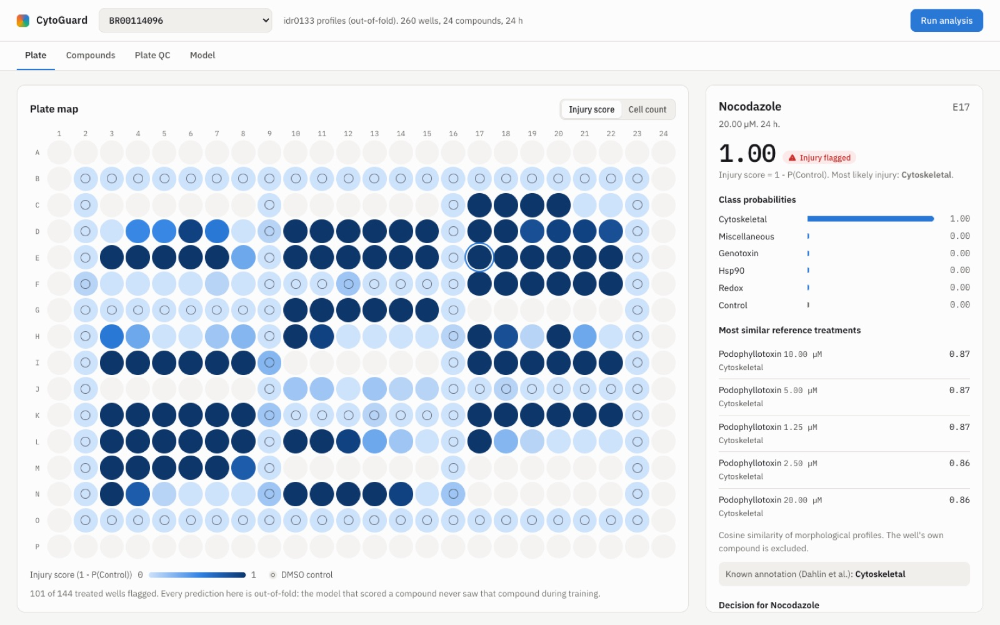
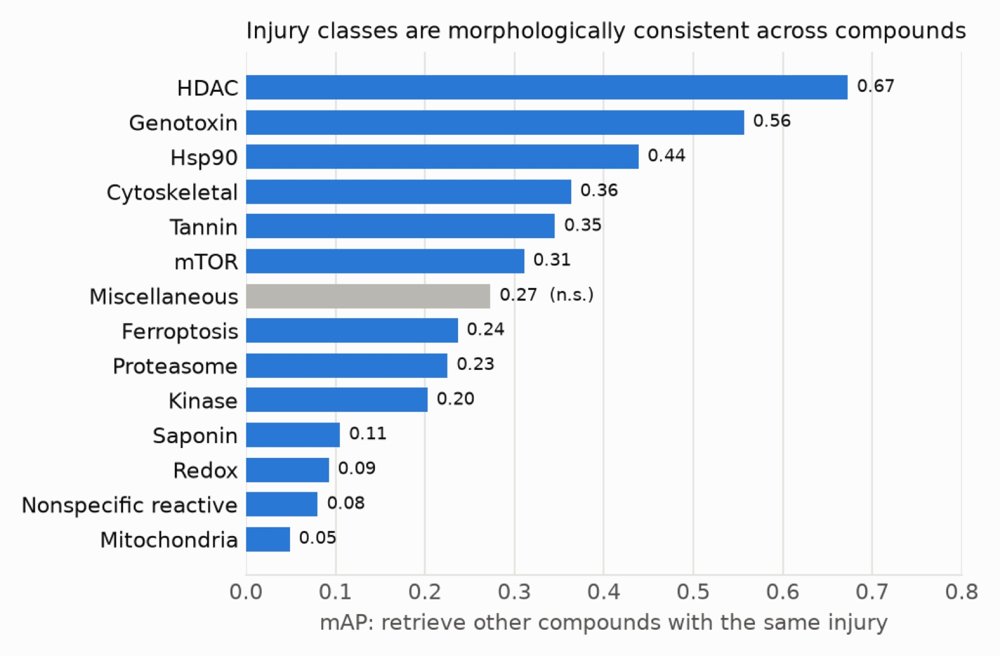
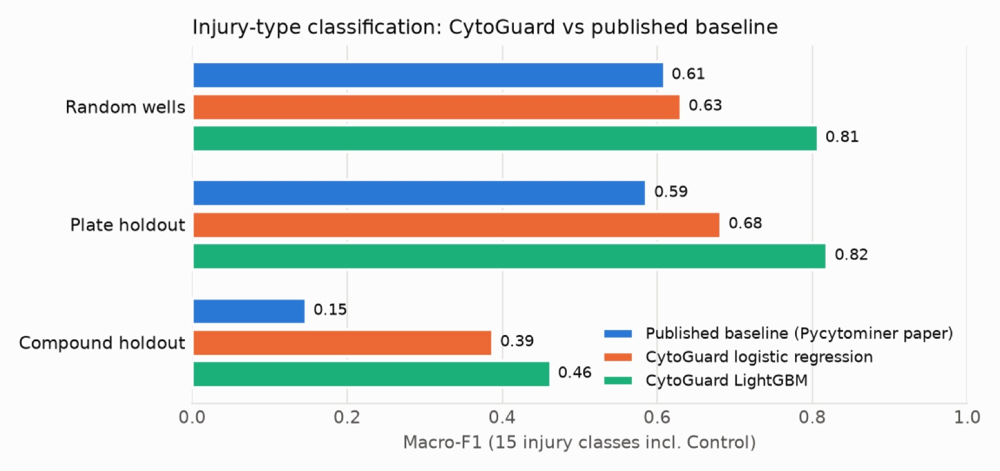
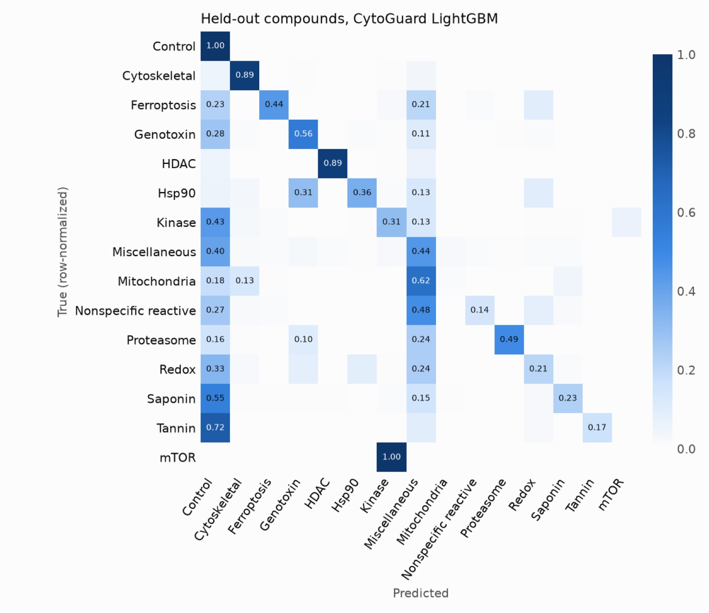
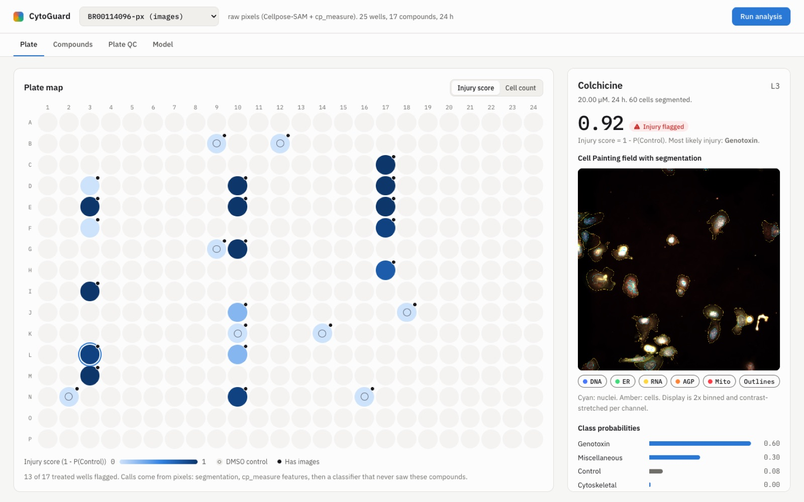

An open platform that flags injured wells in Cell Painting screens, names the likely injury mechanism, and shows the cells behind every call, evaluated on compounds the model has never seen.
Compounds that damage cells nonspecifically are a common source of false positives in phenotypic and target-based screens. I present CytoGuard, an open, end-to-end platform that flags injured wells in Cell Painting screens, names the likely injury mechanism, retrieves morphologically similar reference compounds, and exposes the underlying images and segmentations for review. On the idr0133 reference set (16,701 wells, 144 compounds, 14 injury mechanisms), profile quality validated with mean average precision shows that 88% of treatments are distinguishable from vehicle and that 13 of 14 mechanisms are morphologically consistent across chemically distinct compounds. Under compound-held-out cross-validation, the setting that matches screening a new compound, a gradient-boosted classifier reaches a macro-F1 of 0.462 across 15 classes, separates injured from healthy wells with an AUROC of 0.947, and ranks the true mechanism first for 59% of never-seen compounds (84% within the top three). Under the published baseline's own evaluation protocols it improves macro-F1 from 0.608 to 0.807 (random split) and from 0.586 to 0.819 (plate holdout). An independent pixel-level pipeline (OME-Zarr, Cellpose-SAM, cp_measure) reproduces injury scores from raw images with a correlation of 0.95 against the profile-based predictions on the same wells, although mechanism naming transfers less well across the software gap. All components, from ingest to web interface, are open source, tested and reproducible.
High-throughput screens routinely produce "hits" whose activity comes from cellular injury rather than on-target engagement: redox cycling, nonselective covalent reactivity, membrane disruption, cytoskeletal collapse or DNA damage. These nuisance compounds consume follow-up resources and, if missed, resurface later as toxicity liabilities. Dahlin et al. (2023) assembled 218 prototypical cytotoxic and nuisance compounds, profiled them with Cell Painting in U-2 OS cells across a dose range, and showed that injury mechanisms form distinct morphological clusters. Serrano et al. (2025) used the processed profiles as a case study for Pycytominer, training a multi-class logistic regression to predict 15 injury categories.
This project turns those reference data into a tool a screening scientist can use to triage new compounds. That takes three things beyond a classifier: an evaluation that reflects never-seen compounds, a pipeline that works from raw images rather than pre-computed features, and an interface that shows the evidence behind each call.
Contributions.

Reference set. IDR study idr0133, screen A: 84 plates of U-2 OS cells, Cell Painting (DNA, ER, RNA/nucleoli, AGP, mitochondria), 20x Opera Phenix, 24 h and 48 h treatments. I used the labeled per-well CellProfiler profiles released with the Pycytominer case study (labeled_cell_injury_profile.csv.gz, WayScience/predicting-cell-injury-compounds v2.1.1): 16,701 wells, 372 features, 144 annotated compounds plus DMSO, 1,111 distinct treatments (compound x concentration x time).
| Class | Compounds | Wells | Class | Compounds | Wells |
|---|---|---|---|---|---|
| Control (DMSO) | 1 | 9,855 | Saponin | 11 | 288 |
| Miscellaneous | 39 | 1,302 | HDAC | 5 | 168 |
| Genotoxin | 22 | 944 | Nonspecific reactive | 5 | 128 |
| Cytoskeletal | 15 | 1,472 | Proteasome | 4 | 144 |
| Kinase | 13 | 1,104 | Mitochondria | 4 | 144 |
| Redox | 12 | 312 | Ferroptosis | 4 | 96 |
| Hsp90 | 3 | 552 | Tannin | 4 | 96 |
| mTOR | 2 | 96 |
Raw images. For the pixel track I retrieved raw 16-bit TIFFs (2160 x 2160, one per channel and field) for 25 wells of plate BR00114096 from the EBI mirror of IDR, verifying each file against the published SHA-1 checksums. The selection comprises 8 randomly chosen DMSO wells and, for each injury class present on the plate, the highest-concentration well of up to two distinct compounds (17 wells, 11 classes). The IDR OMERO rendering service could not serve pixels for this study at the time of writing, so the file mirror was used directly.
Profiles were renamed into a tidy Metadata_* schema and cast to float32. Pycytominer feature_select removed low-variance features, one feature from each pair with Pearson correlation above 0.9, features with missing values, and features on the standard blocklist, leaving 352 features. The released profiles are already plate-normalized, so no further normalization was applied in the profile track.
I used copairs to compute average precision for every well and aggregated to mean average precision (mAP) per group, with significance from a 10,000-permutation null and Benjamini-Hochberg correction at 5%.
Two model families were evaluated: an L2-regularized multinomial logistic regression (standardized inputs, C = 0.05, balanced class weights), matching the form of the published baseline, and LightGBM (300 trees, learning rate 0.05, 31 leaves, row subsampling 0.8, feature subsampling 0.5, balanced class weights). Hyperparameters were fixed a priori rather than tuned on test folds.
| Setting | Construction | What it measures |
|---|---|---|
| Random wells | stratified 80/20 well split (seed 0) | recognition of known compounds; mirrors the baseline's "Test" split |
| Plate holdout | 10 randomly chosen plates held out | robustness to plate effects; mirrors the baseline's "Plate Holdout" |
| Compound holdout | 5-fold StratifiedGroupKFold grouped by compound; DMSO grouped by plate | generalization to never-seen compounds; the screening use case |
In the compound holdout every well receives an out-of-fold prediction from a model that saw no well, dose or plate of that compound. A permutation control shuffles labels at the compound level and repeats the full procedure. Metrics are macro-F1 over the classes present, accuracy, and an injury AUROC that uses 1 - P(Control) as a score for "injured vs DMSO". Because triage decisions are made per compound, I also report decision-level accuracy: each compound's class probabilities are averaged over its wells with an injury score of at least 0.5 (falling back to all its wells), and I check whether the true mechanism is ranked first or within the top three.
Baseline. Per-class F1 of the published model was taken from the released fs_all_f1_scores.csv.gz and averaged over its 15 classes, as in my macro-F1. Inspection of the baseline's split code showed that its treatment holdout picks, for each injury with at least 10 compounds, the compound returned by df.min().iloc[1], which is the alphabetically first compound name rather than the one with the fewest wells. That holdout therefore contains only a few compounds, and its score is compared with my compound holdout only directionally.
cpsam_v2) on Apple MPS. A classical backend (Otsu threshold with distance-transform watershed for nuclei, then nucleus-seeded watershed on the cytoplasm composite) is provided as a fallback and comparison. Nuclei and cells are matched one-to-one by greedy maximal overlap. Unmatched nuclei receive a 6-pixel grown cell and cells without a nucleus are discarded, following CellProfiler's primary/secondary object logic. The cytoplasm is the cell minus the nucleus. Masks are written back into the OME-Zarr as NGFF labels.Compartment_Module_Feature_Channel[_Scale_Direction] scheme. 329 of the 352 selected reference features were recovered; the remainder are Gabor features, which cp_measure does not implement.Absolute feature values differ between CellProfiler 4 and cp_measure, and between the full-resolution reference and the binned demo images. I therefore express both domains relative to their own vehicle controls: reference wells are z-scored per plate against that plate's DMSO wells, and demo wells against the demo DMSO wells. A LightGBM model with the settings above is trained on the reference wells restricted to the 329 shared features, excluding the demo plate and every demo compound. Every pixel-track prediction is therefore a never-seen-compound prediction on features from a different software stack.
The library exposes each stage as a function. Analyses are plugins implementing run(PlateContext) -> PluginResult, discovered through the cytoguard.plugins entry-point group. Three are built in: injury flags (per-compound worst-well triage), similarity search (cosine similarity after per-feature scaling, excluding the query's own compound), and plate spatial QC. The spatial plugin tests DMSO wells for edge-versus-interior (Mann-Whitney U), row and column effects (Kruskal-Wallis), with Bonferroni correction and a minimum effect size of 0.05 in injury score, because with about 100 DMSO wells per plate trivially small shifts are otherwise significant. A FastAPI service serves plates, wells, similarity, jobs and decisions. Jobs run on Redis/RQ when configured (with separate gpu and default queues) or on an in-process pool otherwise. The web client renders the plate map, a canvas-based five-channel compositor with mask overlays, a triage table with persisted decisions, and the QC and model views.
Of 1,111 treatments, 88% were retrieved against plate-matched DMSO with significant mAP. Activity was highest for mTOR, HDAC and Hsp90 inhibitors (100%) and lowest for saponins (69%), redox cyclers (79%) and tannins (79%), consistent with the weaker or dose-limited phenotypes of those classes.
Cross-compound injury consistency was significant for 13 of 14 classes. The strongest were HDAC (mAP 0.67), genotoxins (0.56), Hsp90 (0.44) and cytoskeletal agents (0.36). The only non-significant class was Miscellaneous (0.27), a heterogeneous catch-all label for which consistency is not expected. Mitochondrial toxicants (0.05) and nonspecific reactives (0.08) were significant but weak, and they are also among the hardest classes to predict (Section 4.3).

| Setting | Published baseline | Logistic regression | LightGBM |
|---|---|---|---|
| Random wells | 0.608 | 0.630 | 0.807 |
| Plate holdout | 0.586 | 0.682 | 0.819 |
| Compound holdout | 0.146 (directional) | 0.387 | 0.462 |
| Model | Accuracy | Injury AUROC | Top-1 compounds | Top-3 compounds |
|---|---|---|---|---|
| Logistic regression | 0.631 | 0.928 | 45% | 75% |
| LightGBM | 0.791 | 0.947 | 59% | 84% |
| Shuffled labels (LogReg) | 0.078 | 0.562 | n/a | n/a |

My logistic regression already matches or exceeds the baseline under its own protocols, and LightGBM adds a further 0.14 to 0.18 macro-F1. The drop from plate holdout (0.819) to compound holdout (0.462) quantifies how much of the "easy" performance comes from recognizing specific compounds. Even so, performance on never-seen compounds is far above the permutation control, and injured wells are separated from healthy ones with an AUROC of 0.947. In triage the injury score drives the keep or drop decision, and the mechanism label guides interpretation, so this separation matters more than mechanism accuracy.
Per-class F1 on held-out compounds (LightGBM): Control 0.91, Cytoskeletal 0.91, HDAC 0.90, Genotoxin 0.61, Proteasome 0.61, Hsp90 0.49, Ferroptosis 0.49, Miscellaneous 0.44, Kinase 0.42, Saponin 0.34, Tannin 0.28, Redox 0.26, Nonspecific reactive 0.22, Mitochondria 0.02, mTOR 0.00. The main error patterns are:
Both mTOR compounds are predicted as Kinase. mTOR is itself a kinase, and several "Kinase" compounds (for example PI-103 and BEZ235) inhibit PI3K/mTOR, so the confusion is biologically reasonable and the class is too small (two compounds) to learn separately.
72% of tannin wells and 55% of saponin wells are predicted as Control. Labels are assigned per compound, but many low-dose wells show no phenotype. These are label-noise errors more than model errors.
Mitochondrial toxicants and nonspecific reactives are absorbed into the heterogeneous Miscellaneous class, consistent with their low cross-compound mAP in Section 4.1.

Cellpose-SAM processed each 1080 x 1080 field in about 29 s on an Apple M4 GPU (MPS); cp_measure took 2 to 22 s per field depending on cell number.
| Metric | Classical segmentation | Cellpose-SAM |
|---|---|---|
| Median cells per field | 161 | 145 |
| DMSO wells called healthy | 8 / 8 | 8 / 8 |
| Treated wells flagged as injured | 12 / 17 | 13 / 17 |
| Correct mechanism, top-1 | 4 / 17 | 5 / 17 |
| Correct mechanism, top-3 | 7 / 17 | 9 / 17 |
| Mean injury score, treated vs DMSO | 0.67 vs 0.007 | 0.77 vs 0.002 |

Cellpose-SAM beats the classical segmenter on every accuracy row, and the gap is largest in the separation between treated and control wells.
Concordance with the profile track. On the same 25 wells, pixel-track injury scores correlate with the out-of-fold profile-track scores at r = 0.95, and the two agree on flagged versus healthy for 24 of 25 wells. The treated wells called healthy by both tracks, DZNep (relative cell count 0.94), BSI-201 (1.10) and (R)-MG132 (0.89), show near-normal cell counts, so these compounds had no visible effect in this experiment. (R)-MG132 also serves as an internal check. Its stereoisomer (S)-MG132, tested on the same plate at the same concentration, is flagged with an injury score of 1.00 and an 89% loss of cells, and both tracks and the cell counts agree on this difference. The single disagreement is wortmannin (pixel 0.28, profile 1.00), a compound with a subtle phenotype and near-normal cell count (0.85).
Mechanism naming across the software gap is weaker (5 of 17 top-1, 9 of 17 top-3) and skews toward Miscellaneous. Detection depends on large, robust shifts (cell loss, rounding, nuclear changes) that survive differences in feature implementation and resolution. Mechanism discrimination depends on finer texture and distribution features, which are the ones most affected by the CellProfiler-to-cp_measure translation, the missing Gabor features, single-field sampling and binning.
On the reference plate BR00114096, DMSO wells showed a statistically significant edge-versus-interior difference of -0.011 in injury score, which the effect-size criterion correctly does not flag, and a row effect with a spread of 0.082 across row medians, which is flagged for review. Without the effect-size criterion both would be reported. With about 100 DMSO wells per plate, significance alone flags shifts too small to matter.
Cellular injury is detectable from Cell Painting with high reliability even for never-seen compounds, and the detection holds up when the whole pipeline is rebuilt from raw pixels. Mechanism assignment is useful but more fragile: excellent for cytoskeletal, HDAC and genotoxic agents, weak for mechanisms with small reference sets or diffuse phenotypes. In screening triage, the injury score gates the decision, and the mechanism probabilities, similar reference compounds and images give the scientist evidence for the final call.
The gap between plate-holdout and compound-holdout performance (0.82 vs 0.46 macro-F1) shows how much of the easier splits' performance comes from recognizing known compounds. Reporting only random or plate splits overstates how well a model will behave on a new library. Compound-grouped evaluation, permutation controls and decision-level metrics should be the default for this task.
All results are produced by snakemake -s workflow/Snakefile -c4, which downloads and checksums the data, runs the profile benchmark, selects and processes the demo wells, and renders the results page. Random seeds are fixed. The test suite (20 tests, about 3 s) runs on a synthetic dataset with the same schema, so continuous integration never depends on external downloads. Software versions used: Python 3.11, Cellpose 4.2, cp_measure 0.2, Pycytominer 1.7, copairs 0.5, ngff-zarr 0.47, scikit-learn 1.9, LightGBM 4.7, PyTorch 2.14.
Compute. The profile benchmark (mAP, three splits, two models, permutation control) takes about 3.5 minutes on an Apple M4 laptop. The pixel track for 25 wells takes about 20 minutes with Cellpose-SAM on MPS, or about 6 minutes with the classical segmenter.